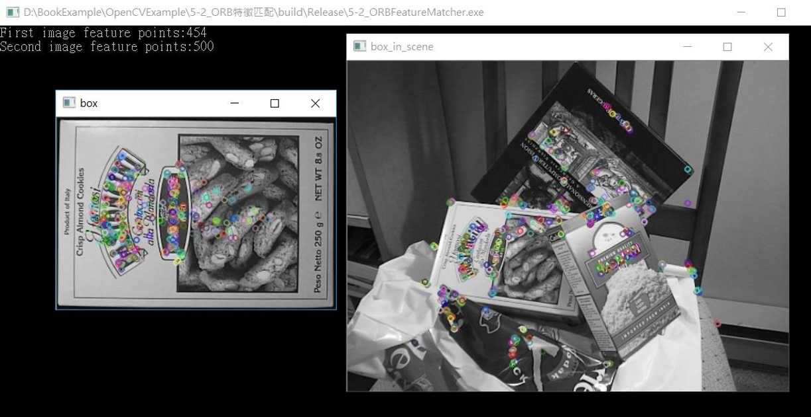
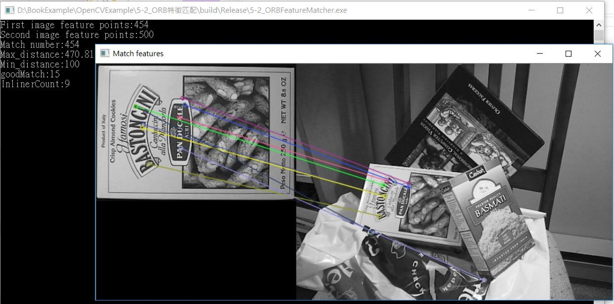

5-2_ORB特徵匹配
程式說明:
運行結果:
藉此尋找像素的位移向量。
在個別兩張不同照片中找到ORB的特徵點，

將兩張圖中找到的ORB特徵互相做匹配。

範例程式:
#include <iostream>
#include <opencv2/opencv.hpp>
#include <opencv2/highgui/highgui.hpp>
int main(int argc, char** argv)
{
//一般影像的feature 獲取通常可以分成兩個部分，一個為偵測特徵點，一個為萃取描述子
cv::Ptr
cv::Ptr
cv::Ptr
if (detector.empty() || descriptor_extractor.empty())
std::cout << "fail to create detector!";
cv::Mat imgFirst = cv::imread("box.png");
cv::Mat imgSecond = cv::imread("box_in_scene.png");
if(!imgFirst.data || ! imgSecond.data)
{
std::cout<<"無法讀取圖檔" << std::endl;
return -1;
}
//偵測特徵點
std::vector
detector->detect(imgFirst, m_FirstKey);
detector->detect(imgSecond, m_SecondKey);
std::cout << "First image feature points:" << m_FirstKey.size() << std::endl;
std::cout << "Second image feature points:" << m_SecondKey.size() << std::endl;
//萃取描述子，用以之後比對的部分
cv::Mat descriptors1, descriptors2;
descriptor_extractor->compute(imgFirst, m_FirstKey, descriptors1);
descriptor_extractor->compute(imgSecond, m_SecondKey, descriptors2);
cv::Mat img_m_FirstKey, img_m_SecondKey;
drawKeypoints(imgFirst, m_FirstKey, img_m_FirstKey, cv::Scalar::all(-1), 0);
drawKeypoints(imgSecond, m_SecondKey, img_m_SecondKey, cv::Scalar::all(-1), 0);
imshow("box", img_m_FirstKey);
imshow("box_in_scene", img_m_SecondKey);
cv::waitKey(1000);
std::vector
descriptor_matcher->match(descriptors1, descriptors2, matches);
std::cout << "Match number:" << matches.size() << std::endl;
double max_dist = 0;
double min_dist = 100;
for (int i = 0; i
double dist = matches[i].distance;
if (dist < min_dist) min_dist = dist;
if (dist > max_dist) max_dist = dist;
}
std::cout << "Max_distance:" << max_dist << std::endl;
std::cout << "Min_distance:" << min_dist << std::endl;
std::vector
for (int i = 0; i
if (matches[i].distance < 0.6 * max_dist)
{
goodMatches.push_back(matches[i]);
}
}
std::cout << "goodMatch:" << goodMatches.size() << std::endl;
cv::Mat img_matches;
drawMatches(imgFirst, m_FirstKey, imgSecond, m_SecondKey, goodMatches, img_matches, cv::Scalar::all(-1)/*CV_RGB(255,0,0)*/, CV_RGB(0, 255, 0), cv::Mat(), 2);
IplImage result = img_matches;
std::vector
int ptCount = (int)m_Matches.size();
cv::Mat p1(ptCount, 2, CV_32F);//to save all feature point of left image
cv::Mat p2(ptCount, 2, CV_32F);//to save all feature point of right image
cv::Point2f pt;
for (int i = 0; i
pt = m_FirstKey[m_Matches[i].queryIdx].pt;
p1.at
p1.at
pt = m_SecondKey[m_Matches[i].trainIdx].pt;
p2.at
p2.at
}
std::vector
cv::Mat F = cv::findFundamentalMat(p1, p2, m_RANSACStatus, cv::FM_RANSAC); // notice p1, p2 original
int OutlinerCount = 0;
for (int i = 0; i
if (m_RANSACStatus[i] == 0)
{
OutlinerCount++;
}
}
int InlinerCount = ptCount - OutlinerCount;
std::cout << "InlinerCount:" << InlinerCount << std::endl;
std::vector
std::vector
std::vector
m_InlierMatches.resize(InlinerCount);
m_LeftInlier.resize(InlinerCount);
m_RightInlier.resize(InlinerCount);
InlinerCount = 0;
float inlier_minRx = imgFirst.cols;
for (int i = 0; i
if (m_RANSACStatus[i] != 0)
{
m_LeftInlier[InlinerCount].x = p1.at
m_LeftInlier[InlinerCount].y = p1.at
m_RightInlier[InlinerCount].x = p2.at
m_RightInlier[InlinerCount].y = p2.at
m_InlierMatches[InlinerCount].queryIdx = InlinerCount;
m_InlierMatches[InlinerCount].trainIdx = InlinerCount;
if (m_RightInlier[InlinerCount].x
}
}
std::vector
std::vector
cv::KeyPoint::convert(m_LeftInlier, key1);
cv::KeyPoint::convert(m_RightInlier, key2);
cv::Mat OutImage;
drawMatches(imgFirst, key1, imgSecond, key2, m_InlierMatches, OutImage);
cvNamedWindow("Match features", 1);
cvShowImage("Match features", &IplImage(OutImage));
cv::waitKey(0);
imshow("Good Matches & Object detection", OutImage);
return 0;
}